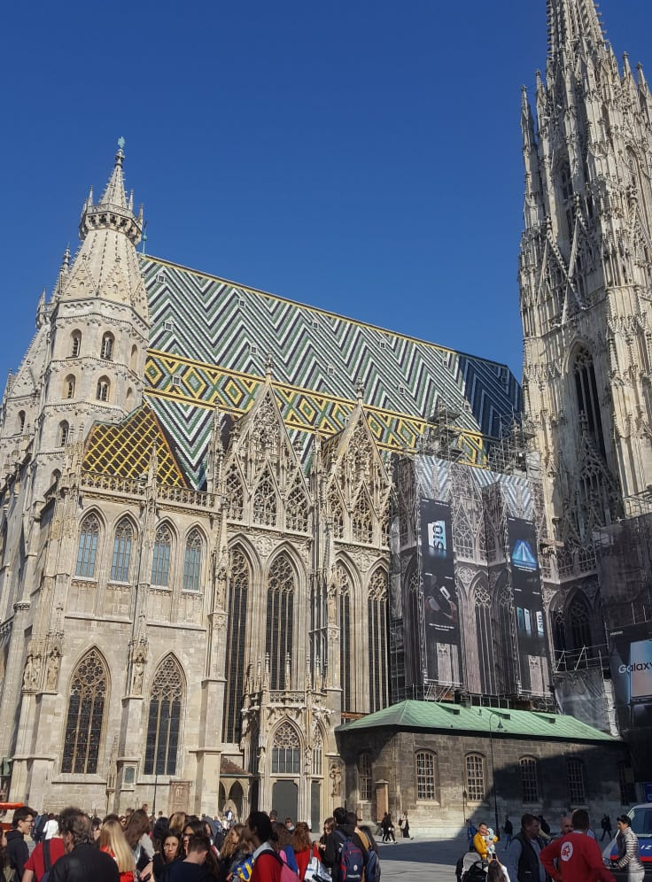
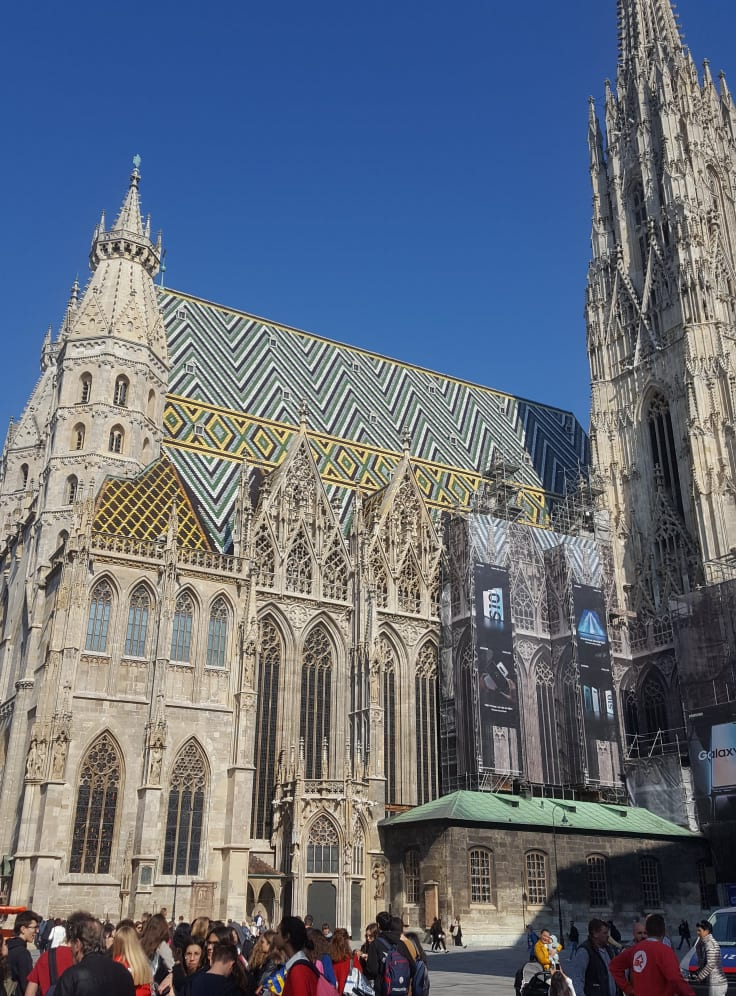

Travelling is the kind of activity, which almost all the people love. For someone it is an opportunity to relax and abstract from everyday busy life. For others it is interesting to observe the way people of other cultures and mentality live. Some people consider it to be the best way to have fun and always try to visit as many clubs, pubs, restaurants and cafes as possible for their wallets and time limits. For me, it is the best experience and one of the most important things in life.
It also brings positive changes in our life and keeps us alive and active.
One of my favorite destinations I would choose Valencia. It was summer 2019, the best summer of my life. Valencia is third-largest city in Spain after Madrid and Barcelona. It is located at the Mediterranean Sea, and you will find beaches right in the very heart of it. During the summer-months it is heavily visited by tourists, and you can spend holidays at the beach, with fantastic possibilities for any kind of sports (golf, diving, cycling, tennis, etc. are all very popular here) and a boiling nightlife, together with an ample cultural offer. Important trade fairs confirm Valencia's position as one of the most dynamic cities in Spain, as does the spectacular Ciudad de las Artes y las Ciencias, the "City of Arts and Sciences", a newly constructed area of the city boasting extravagant architecture.


Spain's most famous food right where it was born: "Paella Valenciana".


Another, great destination is Vienna. It is a European city with the richest history and culture. Spending New Year Eve there was the best time ever. Vienna is known for its high quality of life where art, culture, theater, opera and classical music had a long tradition.
 

There were a couple of Christmas markets all over Vienna that get us into seasonal spirit. All squares were decorated with festive lights that create a Christmas atmosphere. Also, in all night clubs were a lot of people with positive vibes that made it unforgettable party.